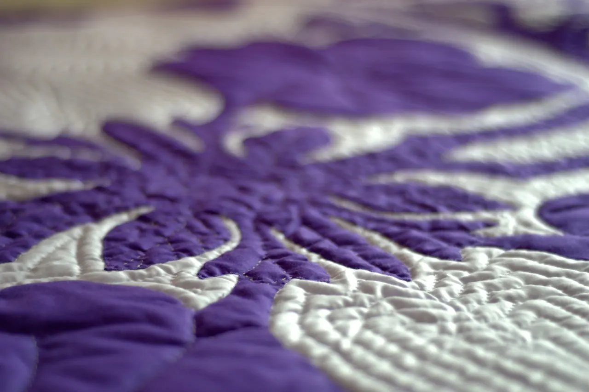

Ana sayfa / İsteğe özel üretim
Ölçüsü, dolgusu, rengi sizden; dikişi ustadan.
Standart dışı yatak, sedir minderi, çeyiz için işlemeli saten yorgan, isim işlemeli çocuk yorganı… Formu doldurun, talebiniz WhatsApp'tan ya da e-postayla ustaya gitsin; fiyatı ve teslim gününü size söylesin.

Dört adımda siparişiniz
Talebi gönderin
Ölçü, dolgu, kumaş, renk ve desen tercihinizi forma yazın.
Usta arar
Kumaş ve renk stoğa göre birlikte seçilir, fiyat ve teslim günü netleşir.
Dükkânda dikilir
Dolgu serilir, yüz kapatılır, desen dikişi atılır; isim/motif işlenir.
Teslim
Dükkândan alın, Korkuteli'de elden teslim edelim ya da kargoya verelim.


Sık sorulanlar
Hangi ölçülerde dikiyorsunuz?
Standart ölçülerin yanında istediğiniz en ve boyda yorgan, yastık, döşek ve minder dikilir.
Yorgana isim ya da logo işlenir mi?
Evet. İsim, tarih, motif ya da logo işlenebilir. Ramazan usta 2015'te müşteri isteğiyle logolu yorganlarıyla haber olmuştu.
Kişiye özel ürün iade edilir mi?
Ölçünüze ve isteğinize göre üretilen ürünler cayma hakkı kapsamında değildir (Mesafeli Sözleşmeler Yönetmeliği md.15). Bu yüzden ölçü, dolgu, renk ve desen siparişten önce birlikte netleşir.
Ne kadar sürede hazır olur?
İş yoğunluğuna ve ürüne göre değişir; usta size kesin günü söyler. Düğün sezonunda erken sipariş önerilir.